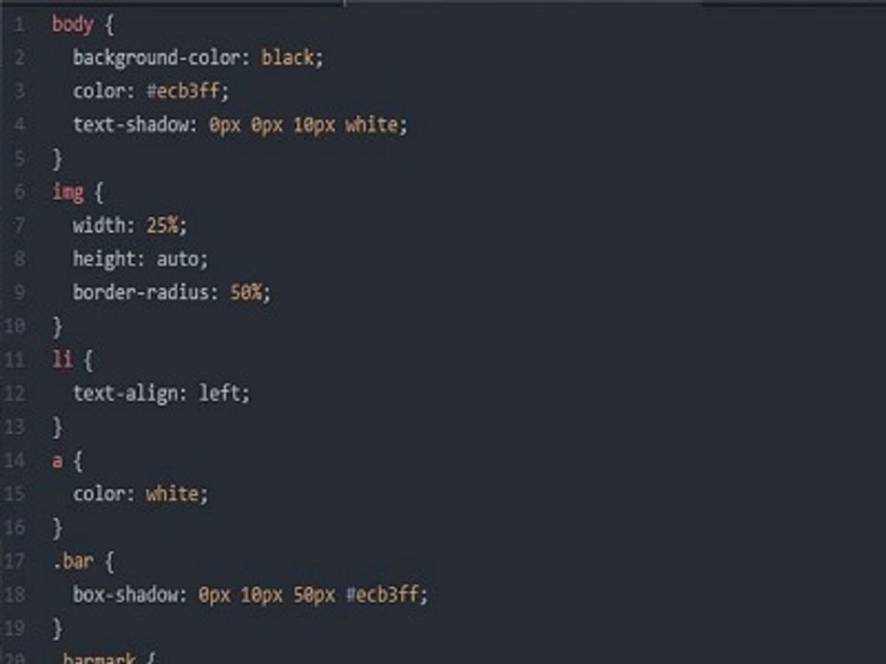

Development
ajxBunnell

Moving Forward

A graduate of St. John's College in Annapolis Maryland, I earned my degree in Philosophy, eventually moving to Seattle to study web development. My training consisted of 1000 hours practice and experience in HTML5, CSS3, JavaScript, C#, React and Angular. I first worked at Conenza (now PeoplePath) for a time at the beginning of my journey. There, I worked with Java 8, SpringMVC, and JavaScript. My main project was to update and overhaul multiple components, one of which was the social media component. Here, we ensured that users could link to all of their other social media sites, while we used the api to check user authentication and authorization. I then moved on to an artist Co-op as a web designer helping set up their web store. The project was a MERN stack project, as originally seen in the GitHub link. My tasks were to work on User authentication and authorization. As of now I am converting mongo over to sql. I am in charge of converting our old methods over to sprocs/stored procedures. My current side project is working on Howarthforlakewood. This is a Wordpress site which uses custom templates. The site was done to my client's desires, and will be implementing donation options for the project.